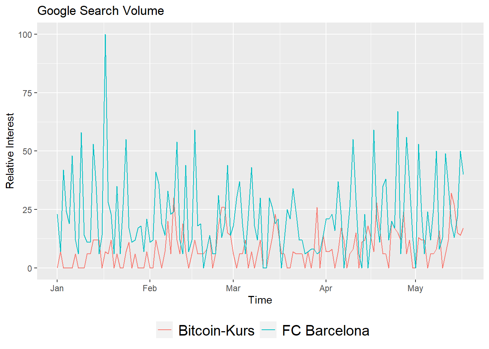

Розділ 4 Збір та читання інформації з різноманітних джерел: файли, веб-сторінки, бази R
Автори: Савчук Сергій, Юрій Клебан
4.1 Загальний опис структури даних
Матеріали розділу у процесі підготовки.
Усі дані, що використовуються для наукових досліджень можна розділити на 3 блоки:
- Структуровані
- Слабоструктуровані
- Неструктуровані
Структуровані дані зазвичай зрозумілі для користувача, сформовані відповідно до певних вимог та дозволяють швидко їх вивчити, без додаткових процедур підготовки.
Важливою для нас характеристикою структурованих даних є те, що вони досить просто піддаються машинній обробці, аналізу та візуалізації.
Слабоструктуровані дані часто можуть бути сприйняті людиною, проте форма їх подачі не дозволяє швидко проаналізувати її машиною.
Найпростішим прикладом структурованих даних є табличні дані, наприклад, в Microsoft Excel, де кожен рядок - це одне спостереження, а кожен стовпець - це одна характеристика.
Слабоструктуровані дані можуть бути перетворені до структурованих за допомогою підготовлених спеціалістом з по роботі з дадними алгоритмом. Подібний етап зазвчай потребує детального аналізу полів, форми по дання, визначення шаблонів помилок у даних тощо.
Неструктуровані дані
4.2 Опис набору даних Telecom Users
Опис інформації про набір даних взято з сервісу kaggle.com.
Оригінальний набір розміщений за адресою https://www.kaggle.com/radmirzosimov/telecom-users-dataset.
Призначення:
Описаний датасет призначений для практикування спеціалістами з машинного навчання розв’язування задач класифікації.
Опис:
Any business wants to maximize the number of customers. To achieve this goal, it is important not only to try to attract new ones, but also to retain existing ones. Retaining a client will cost the company less than attracting a new one. In addition, a new client may be weakly interested in business services and it will be difficult to work with him, while old clients already have the necessary data on interaction with the service.
Accordingly, predicting the churn, we can react in time and try to keep the client who wants to leave. Based on the data about the services that the client uses, we can make him a special offer, trying to change his decision to leave the operator. This will make the task of retention easier to implement than the task of attracting new users, about which we do not know anything yet.
You are provided with a dataset from a telecommunications company. The data contains information about almost six thousand users, their demographic characteristics, the services they use, the duration of using the operator’s services, the method of payment, and the amount of payment.
The task is to analyze the data and predict the churn of users (to identify people who will and will not renew their contract). The work should include the following mandatory items:
- Description of the data (with the calculation of basic statistics);
- Research of dependencies and formulation of hypotheses;
- Building models for predicting the outflow (with justification for the choice of a particular model) 4. based on tested hypotheses and identified relationships;
- Comparison of the quality of the obtained models.
Опис полів набору даних:
-
customerID- customer id -
gender- client gender (male / female) -
SeniorCitizen- is the client retired (1, 0) -
Partner- is the client married (Yes, No) -
tenure- how many months a person has been a client of the company -
PhoneService- is the telephone service connected (Yes, No) -
MultipleLines- are multiple phone lines connected (Yes, No, No phone service) -
InternetService- client’s Internet service provider (DSL, Fiber optic, No) -
OnlineSecurity- is the online security service connected (Yes, No, No internet service) -
OnlineBackup- is the online backup service activated (Yes, No, No internet service) -
DeviceProtection- does the client have equipment insurance (Yes, No, No internet service) -
TechSupport- is the technical support service connected (Yes, No, No internet service) -
StreamingTV- is the streaming TV service connected (Yes, No, No internet service) -
StreamingMovies- is the streaming cinema service activated (Yes, No, No internet service) -
Contract- type of customer contract (Month-to-month, One year, Two year) -
PaperlessBilling- whether the client uses paperless billing (Yes, No) -
PaymentMethod- payment method (Electronic check, Mailed check, Bank transfer (automatic), Credit card (automatic)) -
MonthlyCharges- current monthly payment -
TotalCharges- the total amount that the client paid for the services for the entire time -
Churn - whetherthere was a churn (Yes or No)
4.3 Імпорт даних засобами RStudio
RStudio має ряд засобів для
4.4 CSV-файли: читання, запис
CSV - це тип файлів, у якому інформація розділена комами (Comma Separated Values). CSV є досить зручним форматом даних для передачі між різними машинами, адже по суті є текстовим файлом і дозволяє легко його зчитати.
Примітка. Наспрвді кома не завжди є роздільником CSV-файлів. Це можуть бути і інші символи.
# lets check current working directory to write correct files path
getwd()## [1] "E:/Repos/YuRa/r-science-dev"You can use / or \ for writing correct path in R. For example:
path = "d:/projects/file.csv"
path = "d:\\projects\\file.csv"To combine path use paste() or paste0() functions
work_dir = getwd()
work_dir ## [1] "E:/Repos/YuRa/r-science-dev"file_name = "temp_file.csv"
file_path = paste0(work_dir, "/", file_name)
file_path## [1] "E:/Repos/YuRa/r-science-dev/temp_file.csv"file_path = paste(work_dir, file_name, sep = "/")
file_path## [1] "E:/Repos/YuRa/r-science-dev/temp_file.csv"Thare are few methods for reading/writing csv in base package:
-
read.csv(),write.csv- default data separator is,, decimal is separator.. -
read.csv2(),write.csv2- default data separator is;, decimal is separator,.
Before using any new function check it usage information with help(function_name) or ?function_name,example:?read.csv`.
You can read (current data set has NA values as example, there are no NA in original datase):
data <- read.csv2("data/telecom_users.csv") # default readingdata <- read.csv2("data/telecom_users.csv",
sep = ",", # comma not only possibel separator
dec = ".", # decimal separator can be different
na.strings = c("", "NA", "NULL")) # you can define NA valuesstr(data) # chack data structure / types/ values## 'data.frame': 5986 obs. of 22 variables:
## $ X : int 1869 4528 6344 6739 432 2215 5260 6001 1480 5137 ...
## $ customerID : chr "7010-BRBUU" "9688-YGXVR" "9286-DOJGF" "6994-KERXL" ...
## $ gender : chr "Male" "Female" "Female" "Male" ...
## $ SeniorCitizen : int 0 0 1 0 0 0 0 0 0 1 ...
## $ Partner : chr "Yes" "No" "Yes" "No" ...
## $ Dependents : chr "Yes" "No" "No" "No" ...
## $ tenure : int 72 44 38 4 2 70 33 1 39 55 ...
## $ PhoneService : chr "Yes" "Yes" "Yes" "Yes" ...
## $ MultipleLines : chr "Yes" "No" "Yes" "No" ...
## $ InternetService : chr "No" "Fiber optic" "Fiber optic" "DSL" ...
## $ OnlineSecurity : chr "No internet service" "No" "No" "No" ...
## $ OnlineBackup : chr "No internet service" "Yes" "No" "No" ...
## $ DeviceProtection: chr "No internet service" "Yes" "No" "No" ...
## $ TechSupport : chr "No internet service" "No" "No" "No" ...
## $ StreamingTV : chr "No internet service" "Yes" "No" "No" ...
## $ StreamingMovies : chr "No internet service" "No" "No" "Yes" ...
## $ Contract : chr "Two year" "Month-to-month" "Month-to-month" "Month-to-month" ...
## $ PaperlessBilling: chr "No" "Yes" "Yes" "Yes" ...
## $ PaymentMethod : chr "Credit card (automatic)" "Credit card (automatic)" "Bank transfer (automatic)" "Electronic check" ...
## $ MonthlyCharges : num 24.1 88.2 75 55.9 53.5 ...
## $ TotalCharges : num 1735 3973 2870 238 120 ...
## $ Churn : chr "No" "No" "Yes" "No" ...head(data) # top 6 rows, use n = X, for viewing top X lines## X customerID gender SeniorCitizen Partner Dependents tenure PhoneService
## 1 1869 7010-BRBUU Male 0 Yes Yes 72 Yes
## 2 4528 9688-YGXVR Female 0 No No 44 Yes
## 3 6344 9286-DOJGF Female 1 Yes No 38 Yes
## 4 6739 6994-KERXL Male 0 No No 4 Yes
## 5 432 2181-UAESM Male 0 No No 2 Yes
## 6 2215 4312-GVYNH Female 0 Yes No 70 No
## MultipleLines InternetService OnlineSecurity OnlineBackup
## 1 Yes No No internet service No internet service
## 2 No Fiber optic No Yes
## 3 Yes Fiber optic No No
## 4 No DSL No No
## 5 No DSL Yes No
## 6 No phone service DSL Yes No
## DeviceProtection TechSupport StreamingTV
## 1 No internet service No internet service No internet service
## 2 Yes No Yes
## 3 No No No
## 4 No No No
## 5 Yes No No
## 6 Yes Yes No
## StreamingMovies Contract PaperlessBilling PaymentMethod
## 1 No internet service Two year No Credit card (automatic)
## 2 No Month-to-month Yes Credit card (automatic)
## 3 No Month-to-month Yes Bank transfer (automatic)
## 4 Yes Month-to-month Yes Electronic check
## 5 No Month-to-month No Electronic check
## 6 Yes Two year Yes Bank transfer (automatic)
## MonthlyCharges TotalCharges Churn
## 1 24.10 1734.65 No
## 2 88.15 3973.20 No
## 3 74.95 2869.85 Yes
## 4 55.90 238.50 No
## 5 53.45 119.50 No
## 6 49.85 3370.20 Nois.data.frame(data) # if data is data.frame## [1] TRUEany(is.na(data)) # if dataframe contains any NA values## [1] TRUEapply(is.na(data), 2, any) #check NA by 2nd dimension - columns## X customerID gender SeniorCitizen
## FALSE FALSE FALSE FALSE
## Partner Dependents tenure PhoneService
## FALSE FALSE FALSE FALSE
## MultipleLines InternetService OnlineSecurity OnlineBackup
## FALSE FALSE FALSE FALSE
## DeviceProtection TechSupport StreamingTV StreamingMovies
## FALSE FALSE FALSE FALSE
## Contract PaperlessBilling PaymentMethod MonthlyCharges
## FALSE FALSE FALSE TRUE
## TotalCharges Churn
## TRUE FALSECheck MonthlyCharges: TRUE and TotalCharges: TRUE. These columns has NA-values.
Let’s replace them with mean:
data[is.na(data$TotalCharges), "TotalCharges"] <- mean(data$TotalCharges, na.rm = T)
data[is.na(data$MonthlyCharges), "MonthlyCharges"] <- mean(data$MonthlyCharges, na.rm = T)
any(is.na(data)) # check for NA## [1] FALSEYou can write data with write.csv(), write.csv2() from base package.
write.csv(data, file = "data/cleaned_data.csv", row.names = F)
# by default row.names = TRUE and file will contains first columns with row numbers 1,2, ..., NOne more useful package is readr. Examples of using:
#install.packages(“readr”)
library(readr)
data <- read_csv(file = "data/telecom_users.csv", … )
data <- read_csv2(file = "data/telecom_users.csv", … )4.5 Excel (xlsx): читання, запис
There are many packages to read/write MS Excel files. xlsx one of the most useful.
#install.packages("xlsx") install before use it
library(xlsx)any(grepl("xlsx", installed.packages())) # check if package installed## [1] TRUE?read.xlsx - review package functions and params
Let’s read the data telecom_users.xlsx:
data <- read.xlsx("data/telecom_users.xlsx", sheetIndex = 1)
# sheetIndex = 1 - select sheet to read, or use sheetName = "sheet1" to read by Name# You can also use startRow, endRow and other params to define how mutch data read
data <- read.xlsx("data/telecom_users.xlsx", sheetIndex = 1, endRow = 100)Let’s replace Churn values Yes/No by 1/0:
head(data$Churn)## [1] "No" "No" "Yes" "No" "No" "No"data$Churn <- ifelse(data$Churn == "Yes", 1, 0)head(data$Churn)## [1] 0 0 1 0 0 0Write final data to csv:
write.xlsx(data, file = "data/final_telecom_data.xlsx")4.5.1 Task 2.1
Download from kaggle.com and read dataset Default_Fin.csv:
https://www.kaggle.com/kmldas/loan-default-prediction
Description:
This is a synthetic dataset created using actual data from a financial institution. The data has been modified to remove identifiable features and the numbers transformed to ensure they do not link to original source (financial institution).
This is intended to be used for academic purposes for beginners who want to practice financial analytics from a simple financial dataset.
-
Index- This is the serial number or unique identifier of the loan taker -
Employed- This is a Boolean 1= employed 0= unemployed -
Bank.Balance- Bank Balance of the loan taker -
Annual.Salary- Annual salary of the loan taker
-
Defaulted- This is a Boolean 1= defaulted 0= not defaulted
- Check what columns has missing values
- Count default and non-default clients / and parts of total clients in %
- Count Employed clients
- Count Employed Default clients
- Average salary by Employed clients
- Rename columns to “id,” “empl,” “balance,” “salary,” “default”
4.5.2 Solution for Task 2.1
data <- read.csv("data/Default_Fin.csv")
head(data)## Index Employed Bank.Balance Annual.Salary Defaulted.
## 1 1 1 8754.36 532339.56 0
## 2 2 0 9806.16 145273.56 0
## 3 3 1 12882.60 381205.68 0
## 4 4 1 6351.00 428453.88 0
## 5 5 1 9427.92 461562.00 0
## 6 6 0 11035.08 89898.72 0
- Check what columns has missing values
any(is.na(data))## [1] FALSE
- Count default and non-default clients / and parts of total clients in %
def_count <- nrow(data[data$Defaulted. == 1, ])
no_def_count <- nrow(data[data$Defaulted. == 0, ])
def_count## [1] 333no_def_count ## [1] 9667def_count / nrow(data) * 100 # part defaults## [1] 3.33no_def_count / nrow(data) * 100 # part non-defaults## [1] 96.67
- Count Employed clients
empl <- data[data$Employed == 1, ]
nrow(empl)## [1] 7056
- Count Employed Default clients
empl <- data[data$Employed == 1 & data$Defaulted. == 1, ]
nrow(empl)## [1] 206
- Average salary by Employed clients
empl <- data[data$Employed == 1, ]
mean(empl$Annual.Salary)## [1] 480143.4
- Rename columns to “id,” “empl,” “balance,” “salary,” “default”:
colnames(data) <- c("id", "empl", "balance", "salary", "default")
head(data)## id empl balance salary default
## 1 1 1 8754.36 532339.56 0
## 2 2 0 9806.16 145273.56 0
## 3 3 1 12882.60 381205.68 0
## 4 4 1 6351.00 428453.88 0
## 5 5 1 9427.92 461562.00 0
## 6 6 0 11035.08 89898.72 04.6 XML: читання, запис
XML - eXtensible Markup Language.
For our example we will use data from data/employes.xml. File contains records with info:
<RECORDS>
<EMPLOYEE>
<ID>1</ID>
<NAME>Rick</NAME>
<SALARY>623.3</SALARY>
<STARTDATE>1/1/2012</STARTDATE>
<DEPT>IT</DEPT>
</EMPLOYEE>
...
</RECORDS>#install.packages("XML")
library("XML")
#install.packages("methods")
library("methods")result <- xmlParse(file = "data/employes.xml")
print(result)## <?xml version="1.0"?>
## <RECORDS>
## <EMPLOYEE>
## <ID>1</ID>
## <NAME>Rick</NAME>
## <SALARY>623.3</SALARY>
## <STARTDATE>1/1/2012</STARTDATE>
## <DEPT>IT</DEPT>
## </EMPLOYEE>
## <EMPLOYEE>
## <ID>2</ID>
## <NAME>Dan</NAME>
## <SALARY>515.2</SALARY>
## <STARTDATE>9/23/2013</STARTDATE>
## <DEPT>Operations</DEPT>
## </EMPLOYEE>
## <EMPLOYEE>
## <ID>3</ID>
## <NAME>Michelle</NAME>
## <SALARY>611</SALARY>
## <STARTDATE>11/15/2014</STARTDATE>
## <DEPT>IT</DEPT>
## </EMPLOYEE>
## <EMPLOYEE>
## <ID>4</ID>
## <NAME>Ryan</NAME>
## <SALARY>729</SALARY>
## <STARTDATE>5/11/2014</STARTDATE>
## <DEPT>HR</DEPT>
## </EMPLOYEE>
## <EMPLOYEE>
## <ID>5</ID>
## <NAME>Gary</NAME>
## <SALARY>843.25</SALARY>
## <STARTDATE>3/27/2015</STARTDATE>
## <DEPT>Finance</DEPT>
## </EMPLOYEE>
## <EMPLOYEE>
## <ID>6</ID>
## <NAME>Nina</NAME>
## <SALARY>578</SALARY>
## <STARTDATE>5/21/2013</STARTDATE>
## <DEPT>IT</DEPT>
## </EMPLOYEE>
## <EMPLOYEE>
## <ID>7</ID>
## <NAME>Simon</NAME>
## <SALARY>632.8</SALARY>
## <STARTDATE>7/30/2013</STARTDATE>
## <DEPT>Operations</DEPT>
## </EMPLOYEE>
## <EMPLOYEE>
## <ID>8</ID>
## <NAME>Guru</NAME>
## <SALARY>722.5</SALARY>
## <STARTDATE>6/17/2014</STARTDATE>
## <DEPT>Finance</DEPT>
## </EMPLOYEE>
## </RECORDS>
## rootnode <- xmlRoot(result) # reading rootnode of xml document
rootnode[[1]] # reading first record## <EMPLOYEE>
## <ID>1</ID>
## <NAME>Rick</NAME>
## <SALARY>623.3</SALARY>
## <STARTDATE>1/1/2012</STARTDATE>
## <DEPT>IT</DEPT>
## </EMPLOYEE>rootnode[[1]][[2]] # reading first record in root node and second tag, its <NAME>## <NAME>Rick</NAME>xmldataframe <- xmlToDataFrame("data/employes.xml")
xmldataframe## ID NAME SALARY STARTDATE DEPT
## 1 1 Rick 623.3 1/1/2012 IT
## 2 2 Dan 515.2 9/23/2013 Operations
## 3 3 Michelle 611 11/15/2014 IT
## 4 4 Ryan 729 5/11/2014 HR
## 5 5 Gary 843.25 3/27/2015 Finance
## 6 6 Nina 578 5/21/2013 IT
## 7 7 Simon 632.8 7/30/2013 Operations
## 8 8 Guru 722.5 6/17/2014 Finance4.7 JSON and API
JSON (JavaScript Object Notation) is a lightweight data-interchange format. It is easy for humans to read and write. It is easy for machines to parse and generate. It is based on a subset of the JavaScript Programming Language Standard.
API is the acronym for Application Programming Interface, which is a software intermediary that allows two applications to talk to each other.
One of the most popular packages for json is jsonlite.
#install.packages("jsonlite")
library(jsonlite)Let’s use readinginformation about BTC and USDT crypro currencies from Binance
market = 'BTCUSDT'
interval = '1h'
limit = 100
url <- paste0(url = "https://api.binance.com/api/v3/klines?symbol=", market ,"&interval=", interval,"&limit=", limit)
print(url) # complete request URL## [1] "https://api.binance.com/api/v3/klines?symbol=BTCUSDT&interval=1h&limit=100"On the nex stage you need use fromJSON() function to get data.
More details about requests to Binanace at https://github.com/binance/binance-spot-api-docs/blob/master/rest-api.md#klinecandlestick-data
If you enter url value at browser response is going to be like this:
[
[
1499040000000, // Open time
"0.01634790", // Open
"0.80000000", // High
"0.01575800", // Low
"0.01577100", // Close
"148976.11427815", // Volume
1499644799999, // Close time
"2434.19055334", // Quote asset volume
308, // Number of trades
"1756.87402397", // Taker buy base asset volume
"28.46694368", // Taker buy quote asset volume
"17928899.62484339" // Ignore.
]
]data <- fromJSON(url) # get json and transform it to list()
data <- data[, 1:7] # let's left only 1:7 columns (from Open time to Close time)
head(data)## [,1] [,2] [,3] [,4]
## [1,] "1.625904e+12" "33766.01000000" "33950.00000000" "33686.00000000"
## [2,] "1625907600000" "33761.72000000" "33900.00000000" "33711.95000000"
## [3,] "1625911200000" "33735.98000000" "33800.00000000" "33599.98000000"
## [4,] "1625914800000" "33624.09000000" "33911.82000000" "33565.00000000"
## [5,] "1625918400000" "33793.95000000" "33943.40000000" "33744.40000000"
## [6,] "1.625922e+12" "33858.28000000" "33898.17000000" "33634.16000000"
## [,5] [,6] [,7]
## [1,] "33762.79000000" "1586.69013400" "1625907599999"
## [2,] "33732.57000000" "988.18051900" "1625911199999"
## [3,] "33624.08000000" "1314.38690600" "1625914799999"
## [4,] "33793.94000000" "1674.95679800" "1625918399999"
## [5,] "33861.02000000" "1213.69747000" "1625921999999"
## [6,] "33700.31000000" "1331.15612700" "1625925599999"typeof(data) # check data type## [1] "character"data <- as.data.frame(data) # convert to dataframe
head(data)## V1 V2 V3 V4 V5
## 1 1.625904e+12 33766.01000000 33950.00000000 33686.00000000 33762.79000000
## 2 1625907600000 33761.72000000 33900.00000000 33711.95000000 33732.57000000
## 3 1625911200000 33735.98000000 33800.00000000 33599.98000000 33624.08000000
## 4 1625914800000 33624.09000000 33911.82000000 33565.00000000 33793.94000000
## 5 1625918400000 33793.95000000 33943.40000000 33744.40000000 33861.02000000
## 6 1.625922e+12 33858.28000000 33898.17000000 33634.16000000 33700.31000000
## V6 V7
## 1 1586.69013400 1625907599999
## 2 988.18051900 1625911199999
## 3 1314.38690600 1625914799999
## 4 1674.95679800 1625918399999
## 5 1213.69747000 1625921999999
## 6 1331.15612700 1625925599999# fix columns names
colnames(data) <- c("Open_time", "Open", "High", "Low", "Close", "Volume", "Close_time")
head(data) # looks better, but columns are characters still## Open_time Open High Low Close
## 1 1.625904e+12 33766.01000000 33950.00000000 33686.00000000 33762.79000000
## 2 1625907600000 33761.72000000 33900.00000000 33711.95000000 33732.57000000
## 3 1625911200000 33735.98000000 33800.00000000 33599.98000000 33624.08000000
## 4 1625914800000 33624.09000000 33911.82000000 33565.00000000 33793.94000000
## 5 1625918400000 33793.95000000 33943.40000000 33744.40000000 33861.02000000
## 6 1.625922e+12 33858.28000000 33898.17000000 33634.16000000 33700.31000000
## Volume Close_time
## 1 1586.69013400 1625907599999
## 2 988.18051900 1625911199999
## 3 1314.38690600 1625914799999
## 4 1674.95679800 1625918399999
## 5 1213.69747000 1625921999999
## 6 1331.15612700 1625925599999is.numeric(data[,1]) # check 1st column type is numeric## [1] FALSEis.numeric(data[,2]) # check 2nd column type is numeric## [1] FALSEdata <- as.data.frame(sapply(data, as.numeric)) # convert all columns to numeric
head(data) # good, its double now## Open_time Open High Low Close Volume Close_time
## 1 1.625904e+12 33766.01 33950.00 33686.00 33762.79 1586.6901 1.625908e+12
## 2 1.625908e+12 33761.72 33900.00 33711.95 33732.57 988.1805 1.625911e+12
## 3 1.625911e+12 33735.98 33800.00 33599.98 33624.08 1314.3869 1.625915e+12
## 4 1.625915e+12 33624.09 33911.82 33565.00 33793.94 1674.9568 1.625918e+12
## 5 1.625918e+12 33793.95 33943.40 33744.40 33861.02 1213.6975 1.625922e+12
## 6 1.625922e+12 33858.28 33898.17 33634.16 33700.31 1331.1561 1.625926e+12Final stage is to convert Open_time and Close_time to dates.
data$Open_time <- as.POSIXct(data$Open_time/1e3, origin = '1970-01-01')
data$Close_time <- as.POSIXct(data$Close_time/1e3, origin = '1970-01-01')
head(data) ## Open_time Open High Low Close Volume
## 1 2021-07-10 11:00:00 33766.01 33950.00 33686.00 33762.79 1586.6901
## 2 2021-07-10 12:00:00 33761.72 33900.00 33711.95 33732.57 988.1805
## 3 2021-07-10 13:00:00 33735.98 33800.00 33599.98 33624.08 1314.3869
## 4 2021-07-10 14:00:00 33624.09 33911.82 33565.00 33793.94 1674.9568
## 5 2021-07-10 15:00:00 33793.95 33943.40 33744.40 33861.02 1213.6975
## 6 2021-07-10 16:00:00 33858.28 33898.17 33634.16 33700.31 1331.1561
## Close_time
## 1 2021-07-10 11:59:59
## 2 2021-07-10 12:59:59
## 3 2021-07-10 13:59:59
## 4 2021-07-10 14:59:59
## 5 2021-07-10 15:59:59
## 6 2021-07-10 16:59:59tail(data) # check last records## Open_time Open High Low Close Volume
## 95 2021-07-14 09:00:00 31807.01 31942.35 31754.55 31835.47 1632.8038
## 96 2021-07-14 10:00:00 31829.03 32000.00 31825.56 31920.01 1452.0296
## 97 2021-07-14 11:00:00 31920.01 31996.00 31702.92 31751.48 1637.1042
## 98 2021-07-14 12:00:00 31751.48 32500.00 31550.00 32327.70 5200.5985
## 99 2021-07-14 13:00:00 32330.00 32707.27 32260.83 32427.58 2759.7719
## 100 2021-07-14 14:00:00 32427.59 32562.48 32366.34 32380.93 987.1142
## Close_time
## 95 2021-07-14 09:59:59
## 96 2021-07-14 10:59:59
## 97 2021-07-14 11:59:59
## 98 2021-07-14 12:59:59
## 99 2021-07-14 13:59:59
## 100 2021-07-14 14:59:594.8 Google Services
4.8.1 Spreadsheets
THIS CHAPTER IS UNDER CONSTRUCTION / Working with Google Spreadsheets need account authorization.
googlesheets4 is a package to work with Google Sheets from R.
#install.packages("googlesheets4")
library(googlesheets4)You can read google documents after authentification on google service. There is sample code:
read_sheet("https://docs.google.com/spreadsheets/d/1U6Cf_qEOhiR9AZqTqS3mbMF3zt2db48ZP5v3rkrAEJY/edit#gid=780868077")
gs4_deauth()Let’s read sample dataset gapminder. It detailed described in next paragraph.
gs4_example(“gapminder”)
4.8.2 Trends
Google Trends is a service for analyzing search requests by many filters like region (continent, country, locality), period (year, month), information category (business, education, hobby, healthcare), information type (news, shopping, video, images) https://trends.google.com/trends/
#install.packages('gtrendsR')
#install.packages('ggplot2')
library(gtrendsR) # loading package for Google Trends queries
library(ggplot2)Let’s configure out google trends query params
keywords = c("Bitcoin-Kurs", "FC Barcelona") # search keywords
country = c('AT') # search region from https://support.google.com/business/answer/6270107?hl=en
time = ("2021-01-01 2021-05-17") # period
channel = 'web' # search channel: google search ('news' - google news, 'images' - google images)# query
trends = gtrends(keywords, gprop = channel, geo = country, time = time, tz = "UTC")time_trend = trends$interest_over_time
head(time_trend) # last 6## date hits keyword geo time gprop category
## 1 2021-01-01 7 Bitcoin-Kurs AT 2021-01-01 2021-05-17 web 0
## 2 2021-01-02 0 Bitcoin-Kurs AT 2021-01-01 2021-05-17 web 0
## 3 2021-01-03 6 Bitcoin-Kurs AT 2021-01-01 2021-05-17 web 0
## 4 2021-01-04 6 Bitcoin-Kurs AT 2021-01-01 2021-05-17 web 0
## 5 2021-01-05 0 Bitcoin-Kurs AT 2021-01-01 2021-05-17 web 0
## 6 2021-01-06 0 Bitcoin-Kurs AT 2021-01-01 2021-05-17 web 0tail(time_trend) # latest 6## date hits keyword geo time gprop category
## 269 2021-05-12 16 FC Barcelona AT 2021-01-01 2021-05-17 web 0
## 270 2021-05-13 6 FC Barcelona AT 2021-01-01 2021-05-17 web 0
## 271 2021-05-14 0 FC Barcelona AT 2021-01-01 2021-05-17 web 0
## 272 2021-05-15 7 FC Barcelona AT 2021-01-01 2021-05-17 web 0
## 273 2021-05-16 19 FC Barcelona AT 2021-01-01 2021-05-17 web 0
## 274 2021-05-17 11 FC Barcelona AT 2021-01-01 2021-05-17 web 0Let’s visualize query results:
plot <- ggplot(data=time_trend, aes(x=date, y=hits, group=keyword, col=keyword)) +
geom_line() +
xlab('Time') +
ylab('Relative Interest') +
theme(legend.title = element_blank(), legend.position="bottom", legend.text=element_text(size=15)) +
ggtitle("Google Search Volume")
plot
4.9 SQL (SQLite sample)
We are going to review working with database on SQLite, becouse it allows us not to install DB-server and start working with simple file.
For now we will use RSQLite package.
#install.packages("RSQLite")
library(RSQLite)# let's use mtcars data set
data("mtcars") # loads the data
head(mtcars) # preview the data## mpg cyl disp hp drat wt qsec vs am gear carb
## Mazda RX4 21.0 6 160 110 3.90 2.620 16.46 0 1 4 4
## Mazda RX4 Wag 21.0 6 160 110 3.90 2.875 17.02 0 1 4 4
## Datsun 710 22.8 4 108 93 3.85 2.320 18.61 1 1 4 1
## Hornet 4 Drive 21.4 6 258 110 3.08 3.215 19.44 1 0 3 1
## Hornet Sportabout 18.7 8 360 175 3.15 3.440 17.02 0 0 3 2
## Valiant 18.1 6 225 105 2.76 3.460 20.22 1 0 3 1# create new db file
db_path = paste0("data/cars_1.sqlite") # change file name for new create connection
# create connection
conn <- dbConnect(RSQLite::SQLite(),
db_path,
overwrite = TRUE, append = FALSE) # for lecture content only# Write the mtcars dataset into a table names mtcars_data
dbWriteTable(conn, "cars_table", mtcars)
# List all the tables available in the database
dbListTables(conn)## [1] "cars_table"table_data <- dbGetQuery(conn, "SELECT * FROM cars_table")
head(table_data)## mpg cyl disp hp drat wt qsec vs am gear carb
## 1 21.0 6 160 110 3.90 2.620 16.46 0 1 4 4
## 2 21.0 6 160 110 3.90 2.875 17.02 0 1 4 4
## 3 22.8 4 108 93 3.85 2.320 18.61 1 1 4 1
## 4 21.4 6 258 110 3.08 3.215 19.44 1 0 3 1
## 5 18.7 8 360 175 3.15 3.440 17.02 0 0 3 2
## 6 18.1 6 225 105 2.76 3.460 20.22 1 0 3 1# close connection
dbDisconnect(conn)You can write complex queries for many tables if you knowledge of SQL allows.